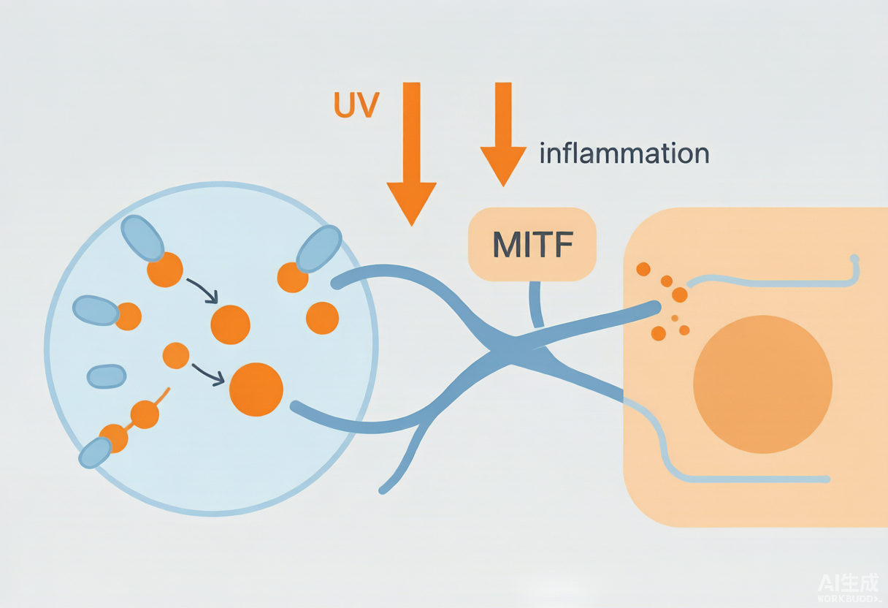

工程师视角：黑色素 = 黑素细胞在黑素小体内经酪氨酸酶级联合成的聚合物；美白的本质不是「漂白」，而是多靶点下调——抑制酪氨酸酶活性、压低 MITF 转录、阻断黑素小体向角质细胞转运、抗 UV/炎症再激活。单靶点很容易被下游代偿绕过，复配才是真功夫。
产品经理视角：「美白」是消费者认知度最高的功效词，但也是最卷、监管最严（特妆注册）的赛道。差异化不在「我加了 377」，而在「按色斑分型做分区方案」+「抑制生成/阻断转运/抗氧化抗炎」三位一体叙事——把成分表变成消费者看得懂的「淡斑逻辑」。
一、黑色素生成的四级调控（工程师机制链）
黑素细胞位于基底层，其内的黑素小体（melanosome）是合成黑素的「工厂」。经典级联：酪氨酸（Tyr）在酪氨酸酶（TYR）催化下羟化为 L-多巴，再氧化为多巴醌（Dopaquinone），经吲哚途径生成真黑素（褐黑）或经半胱氨酸/谷胱甘肽途径生成褐黑素（红黄）。TYR、TRP1、TRP2 三个酶由转录因子 MITF 统一上调，MITF 因此是整个通路的「总开关」。
合成后的黑素小体沿树突转运到相邻角质形成细胞，随角化上行至表皮，形成肉眼可见的肤色与色斑。UV（尤其 UVA）、炎症介质（α-MSH、ACTH、PGE2、内皮素-1、TNF-α）通过 MC1R→cAMP→PKA→CREB 通路强烈激活 MITF，这是「晒黑」和「炎症后色素沉着（PIH）」的共同上游。所以美白成分想起效，要么掐酶、要么压 MITF、要么断转运、要么先抗炎抗 UV——四选一或叠加。
工程师视角：关键调控节点：①TYR 催化限速步（多数美白剂的作用点）；②MITF 转录（受 cAMP/ Wnt/ 热休克等上游调控，且易被 UV 再激活）；③黑素小体转运（Rab27a、肌球蛋白Va、Slac2-a 参与，烟酰胺在此环节截流）；④氧化态（多巴醌可被 VC 还原回多巴，打断聚合）。四环任一被堵，下游黑色素都会减少。
产品经理视角：消费者听不懂「MITF」，但听得懂「从源头抑制黑色素生成 + 切断黑色素搬运到表皮 + 抗氧化淡印」这三句话。把机制翻译成「三层淡斑逻辑」，比堆成分名词更有说服力，也更易支撑「特妆」功效宣称。
二、色斑的分型与成因（分区美白的基石）
- 黄褐斑（melasma）：雌激素/孕激素 + UV + 慢性炎症 + 血管增生共同驱动，真皮层炎症重，最难治、易复发，需「抗炎 + 淡印 + 严格防晒」长期管理。
- 炎症后色素沉着（PIH）：痤疮、外伤、激光后的炎症介质（PGE2、内皮素）激活黑素细胞，肤色越深越明显，重点是先灭火再淡印。
- 雀斑（freckles）：遗传 + UV 诱发的表皮型色素，边界清晰，对激光/IPL 反应好。
- 晒斑/老年斑（lentigines）：UV 累积 + 年龄相关的角质形成细胞良性增生，偏真皮浅层，需剥脱/光子等医美介入。
- 分区逻辑：同一张脸，面颊（黄褐斑好发）要温和抗炎，鼻翼/眼下（PIH）要消炎淡印，T 区/手背（晒斑）可上更强剥脱或光电——一刀切的「全脸猛药」反而爆痘反黑。
工程师视角：分型决定配方策略：表皮型（雀斑/部分晒斑）可用剥脱+抑制转运（烟酰胺、传明酸）；真皮/混合型的黄褐斑要避开强刺激（氢醌、高浓度酸易反黑），走「低浓度多靶点 + 抗炎（红没药醇/甘草亭酸）+ 严格防晒」慢路径。原料选择必须匹配色斑所在层次。
三、美白成分矩阵与配方落地（靶点 → INCI → 添加量 → 配伍）
美白活性物配方落地表（工程师视角，添加量取常规安全区间，实际以原料规格与法规为准）
| 靶点/作用 | 推荐原料（INCI） | 建议添加量 | 配伍·pH·稳定要点 |
|---|---|---|---|
| 抑制酪氨酸酶（强效） | PHENYLETHYL RESORCINOL（377） | 0.1%–0.5%（限用上限0.5%） | 油溶性，油相高温加入；弱酸–中性稳定；与 VC 衍生物协同；特妆可用但需要注册 |
| 抑制黑素小体转运 | NIACINAMIDE（烟酰胺） | 2%–5% | 水相；pH 5.0–7.0；高浓度可能泛红刺痛，需梯度测试；与传明酸协同 |
| 抗炎/抗纤溶（抑 PIH） | TRANEXAMIC ACID（传明酸/氨甲环酸） | 2%–3% | 水相；pH 6.0–7.0；稳定；普通化妆品可用，淡印叙事强 |
| 抑制酪氨酸酶+抗炎（植物） | GLABRIDIN（光甘草定） | 0.05%–0.2% | 油溶/包裹；低浓度高效；注意来源与纯度；可复配舒缓基底 |
| 还原多巴醌（抗氧化） | ASCORBIC ACID（VC）/ 衍生物（VC-IP/AA2G） | VC 5%–15%；衍生物 1%–3% | VC 需 pH<3.5 才稳，易氧化；衍生物更稳但需转化；避光避热 |
| 抑制酶+剥脱（处方思路） | AZELAIC ACID（壬二酸）/ KOJIC ACID（曲酸） | 壬二酸 10%–20%；曲酸 ≤1% | 壬二酸弱酸、温和抗炎；曲酸易致敏、需控量；均注意稳定性 |
| 包裹增效（递送） | 脂质体/NDS 包裹的上述活性物 | 载药 0.5%–2% | 水/低温加入；配合促渗（如 DMIS）双轨；提升体感与见效 |
产品经理视角：复配叙事比单打独斗高级：377（掐酶）+ 烟酰胺（断转运）+ 传明酸（抗炎淡 PIH）+ VC（抗氧化还原）构成「生成—搬运—炎症—氧化」四面围堵。宣称话术从「添加 377」升级为「四通路分区淡斑」，溢价与可信度都更高。但要诚实——不得暗示「速效祛斑/治疗黄褐斑」。
四、分区美白的工程实现
分区不是营销话术，而是配方与剂型的差异化：①浓度分区——全脸用温和基底（烟酰胺 2% + 传明酸 + 光甘草定），色斑处叠加点涂精华（377 0.5% + 壬二酸）；②递送分区——面部脆弱区用缓释包裹降低刺激，手背/厚皮区可用促渗提升渗透；③时段分区——晨间重防晒抗氧化（VC + 防晒），夜间重淡印修护（377 + 烟酰胺 + 舒缓）。剂型上，精华>乳液>面霜的渗透梯度也天然支持分区。
五、合规红线（特妆与限用）
美白成分法规状态与宣称边界（依据《化妆品安全技术规范》/ 特妆注册要求）
| 成分 | 法规状态 | 限量/要求 | 宣称边界 |
|---|---|---|---|
| 苯乙基间苯二酚（377） | 驻留类可用 | ≤0.5% | 「美白」需特妆注册；不得暗示治疗 |
| 氢醌（对苯二酚） | 化妆品禁用 | 0（禁用） | 任何美白产品不得添加 |
| 烟酰胺/传明酸/光甘草定 | 普通化妆品可用 | 按常规安全量 | 可作功效宣称，需人体/文献依据 |
| 曲酸 | 可用（限用思路） | ≤1%（参考） | 易致敏，需警示；特妆路径更稳 |
| 美白功效整体 | 特殊化妆品 | 需注册 + 人体功效评价 | 「淡化色斑」可用，「治疗黄褐斑」违规 |
工程师视角：377 是限用成分（≤0.5%），超过即违规；氢醌在化妆品中禁用，任何「速效祛斑」产品都可能是非法添加。配方设计必须在合规红线内做功效，并准备人体功效评价报告支撑特妆注册——这是美白赛道最硬的护城河。
六、今日可落地行动
- 极光系列立项「分区淡斑」：全脸基底（烟酰胺 2% + 传明酸 2% + 光甘草定 0.1%）+ 点涂精华（377 0.5% + 壬二酸 10%），建立浓度梯度。
- 复配验证：Franz 扩散池测渗透 + 体外酪氨酸酶抑制率 + 斑马鱼/黑素细胞模型看 MITF/TYR 下调，为特妆人体评价备证。
- 与递送笔记联动：评估 NDS 包裹 377/烟酰胺 + DMIS 促渗双轨，降低刺激、提升见效。
- 合规自查：377 添加量 ≤0.5%、剔除任何氢醌风险源；启动「美白」特妆注册与人体功效评价 SOP。
- 市场叙事从「成分堆砌」升级为「四通路分区淡斑逻辑」，并明确「不治疗黄褐斑」的合规口径。
- 读完本篇对我说「加工这篇」，我压成简洁知识块入 Topics/化妆品护肤，并与光老化/屏障/神经美容互链（UV 与炎症是共同上游）。
- 缺口：仓库尚无「美白/黑色素」独立卡片，建议本轮迭代补建并与光老化、敏感肌、医美术后互链。
附图

参考资料与出处链接
- Signaling Pathways in Melanogenesis (PMC4964517) https://pmc.ncbi.nlm.nih.gov/articles/PMC4964517/
- The biochemistry of melanogenesis: an insight (Frontiers 2024) https://www.frontiersin.org/journals/molecular-biosciences/articles/10.3389/fmolb.2024.1440187/full
- Recent advances in molecular basis of melanogenesis (PMC7308992) https://pmc.ncbi.nlm.nih.gov/articles/PMC7308992/
- 2026 祛斑美白推荐｜分色斑方案、合规护肤品、医美项目 https://zhuanlan.zhihu.com/p/2058606757115705086
- 色斑是怎么形成的？光甘草定与常见美白成分科普 http://www.redsh.com/pinpai/20260915/232114.shtml
- 色斑暗沉反复难改善？科学美白祛斑护肤指南及热门产品实测 https://www.toutiao.com/article/7638252046591836718/
- 黄褐斑、炎症后色素沉着 VS 地表最强美白成分 https://zhuanlan.zhihu.com/p/624375145